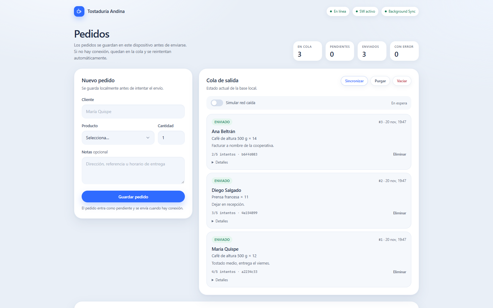
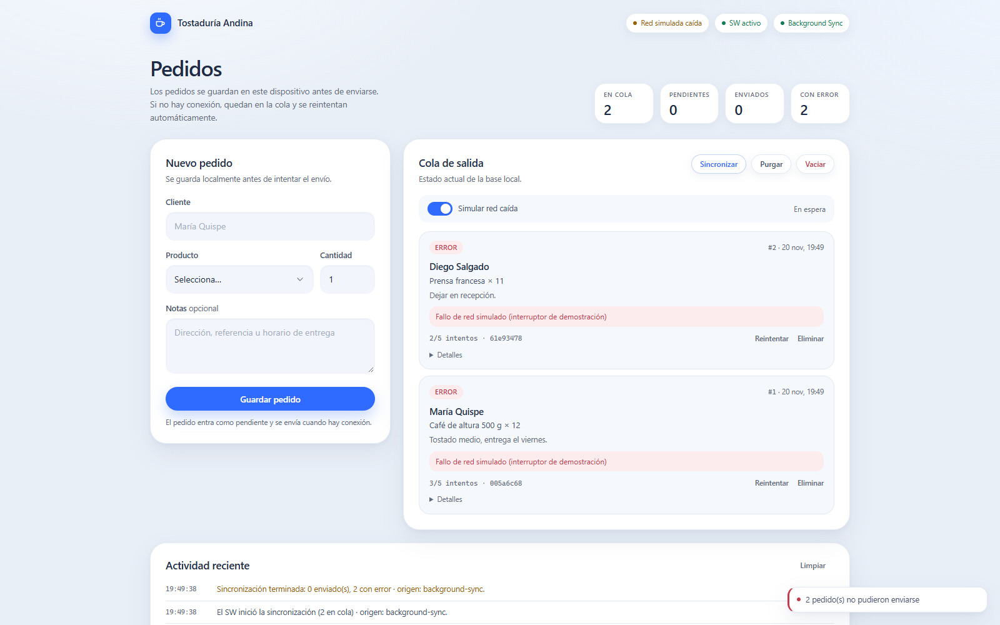

Red intermitente
El POST puede fallar por caída de red, timeout o respuesta 500. La interfaz no debe depender de ese resultado para aceptar el pedido.
PortafolioCaso de estudio
Proyecto 01 / 04 · Persistencia offline
Pedidos que sobreviven a una red que falla.
Una tostaduría toma pedidos desde una tablet. La conexión va y viene, y el servidor tampoco es garantía. La regla de diseño fue una sola: el pedido se guarda antes de intentar salir.

En un mostrador no hay tiempo para esperar una respuesta del servidor. Si la red cae a mitad de un pedido, una implementación ingenua pierde la venta o deja al empleado rellenando el formulario dos veces.
El reto era que la interfaz respondiera al instante, que el dato sobreviviera al cierre de la pestaña y que el envío se reanudara sin intervención cuando volviera la conexión. Todo eso sin librerías: la consigna pedía usar las APIs del navegador directamente.
El POST puede fallar por caída de red, timeout o respuesta 500. La interfaz no debe depender de ese resultado para aceptar el pedido.
Guardar en memoria o en localStorage no basta: hacían falta transacciones, índices y consultas por estado.
No había servicio propio. La misma app debía funcionar con un mock local y con una API pública de pruebas en Pages.
El pedido se guarda antes de intentar salir: eso es el Outbox.
La página nunca hace el fetch. Solo encola y avisa. El motor de envío vive en el Service Worker, así que puede terminar el trabajo aunque la pestaña ya no esté abierta.
Cuatro piezas, una sola dirección: la interfaz escribe, la base guarda, el worker envía y la interfaz vuelve a leer el resultado.
El formulario valida y llama a Outbox.enqueue(). La respuesta es inmediata.
enqueue(payload)
El registro nace como pendiente, con clientId, payload, intentos y fechas.
outbox-db / outbox
Lee los pendientes en orden FIFO, hace el POST y marca enviado o error.
sync · FLUSH_OUTBOX
El worker avisa a las pestañas abiertas; la UI refresca contadores y registro de actividad.
OUTBOX_SYNC_RESULT
En Chromium el disparador es Background Sync (tag outbox-sync). En Safari, donde no existe SyncManager, el evento online pide el vaciado por mensaje. La lógica de envío es la misma en los dos casos.
Cada decisión responde a una falla concreta. Ninguna está ahí para llenar una diapositiva.
Si el envío falla, el pedido ya está a salvo en IndexedDB. La confirmación al usuario no espera a la red; la sincronización es responsable del resto.
Cada registro lleva un UUID con índice único. El backend puede usarlo como clave de idempotencia y descartar duplicados si el reintento llega dos veces.
El wrapper propio de IndexedDB resuelve la promesa en oncomplete, no en el éxito del request. Así un cambio de estado no se pierde a mitad de camino ni compite con otra escritura.
La petición vive en api.js y la ejecuta únicamente el Service Worker. No hay dos caminos de envío que puedan duplicar pedidos; el bloqueo activeSync evita disparos concurrentes.
Los registros se ordenan por fecha y se encadenan con promesas, uno por uno. Después de cinco intentos el pedido queda en error con su mensaje, sin bloquear a los demás.
{
id: 1,
clientId: "uuid-v4", // idempotencia
method: "POST",
payload: { cliente, producto, cantidad, notas },
status: "pendiente", // pendiente | enviado | error
attempts: 0, // máximo 5
createdAt: "2026-11-16T...",
lastError: null
}
La demo pública apunta a una API de pruebas. Para ver el ciclo completo con el mock incluido, basta con levantar el servidor local del repositorio.
attempts: 0 y su payload completo.outbox-db para ver los registros reales, no un estado dibujado.En local: node tools/server.js y abre http://localhost:8765/.
Lo que cambiaría antes de llevarlo a producción, y que puedo explicar sin memorizar un diagrama:
¿Quieres ver el código o probar la demo?
Volver al portafolio ↗